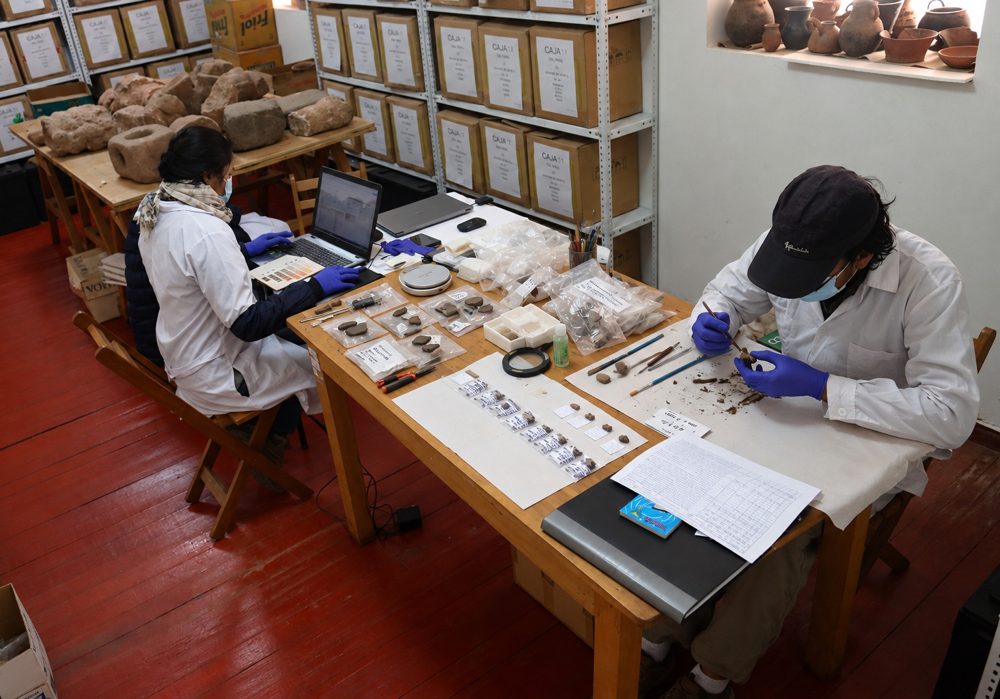
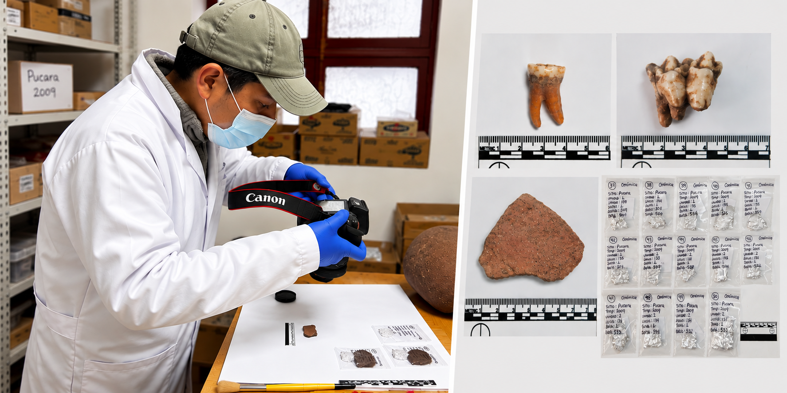

FOODPOWER
FOODPOWERCOLLECTIONS
Archaeological Collections in Peru
FOODPOWER draws on archaeological collections from Peru to investigate changing foodways, diet, inequality, and power in the ancient Andes. These collections provide the archaeological contexts, materials, and samples that form the foundation for laboratory research.
01 · ARCHAEOLOGICAL CONTEXTS
Understanding food within its archaeological context
Archaeological contexts provide the foundation for investigating past foodways. FOODPOWER draws on archaeological collections from seven sites in Peru: Pucara, Palermo, San Bartolomé–Wiskachuni, Camata, Taraco, Wilamaya Patjxa, and Kaillachuro. Together, these collections span approximately 5,000 to 1,000 years ago, from the Terminal Archaic period through the Tiwanaku period, providing a broad chronological perspective on changing foodways in the ancient Andes. The collections include materials from settlements, domestic spaces, burials, activity areas, and other archaeological contexts in which food, animals, plants, vessels, and human remains are preserved. Understanding where these materials were recovered and how they were associated is essential for interpreting the evidence generated through laboratory analysis.
Understanding where materials were recovered and how they were associated is essential for interpreting the evidence generated through laboratory analysis.
02 · PERUVIAN MUSEUM COLLECTIONS
Researching archaeological collections
Museum collections provide access to archaeological materials recovered from sites across the Andes. FOODPOWER works with curated collections to identify suitable materials for archaeological, isotopic, and biomolecular research.
Collection-based research also allows materials from different archaeological contexts and periods to be examined together, creating opportunities for broader comparisons of changing foodways.

03 · SAMPLING
Selecting and documenting materials for laboratory research
Sampling is a critical stage in the FOODPOWER research process. A total of 350 archaeological samples were selected from collections associated with seven archaeological sites in Peru, providing a diverse body of materials for laboratory research.
The selected materials include 235 ceramic fragments, 56 human remains, 43 animal remains, and 16 botanical samples. Together, these materials represent different archaeological contexts and provide complementary evidence for investigating foodways, diet, and changing relationships between people, animals, plants, and food.
Samples were selected according to their archaeological context, preservation, research potential, and suitability for the project’s analytical approaches. Detailed documentation accompanies each sample, including photographs, measurements, contextual information, and sample records, maintaining the connection between the archaeological collections and the laboratory research.

04 · FROM FIELD TO LABORATORY
Following the evidence from archaeological context to molecular analysis
Fieldwork, museum research, sampling, and laboratory analysis are interconnected stages of the FOODPOWER research process.
Archaeological context provides the framework for interpreting laboratory evidence, while isotopic, molecular, and proteomic analyses provide new information about the foods, practices, and relationships preserved within archaeological materials.
THE FOODPOWER APPROACH
From archaeological materials to evidence about food, society, and power.
FOODPOWER connects archaeological fieldwork and collections research with laboratory analysis to investigate how foodways changed and how access to food became connected to social differentiation and political power in the ancient Andes.